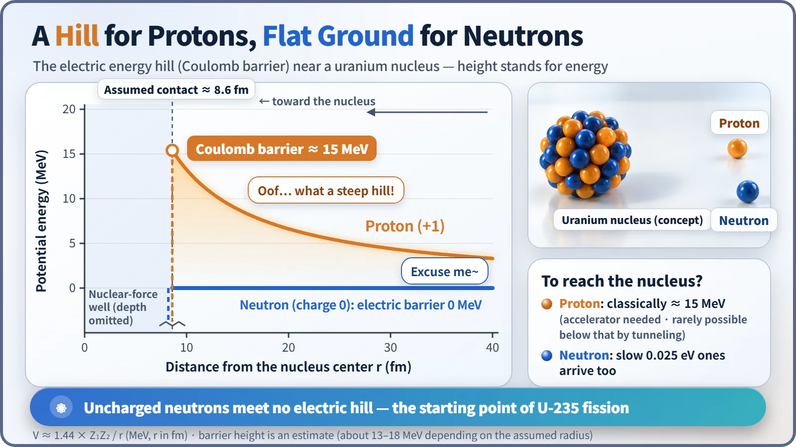
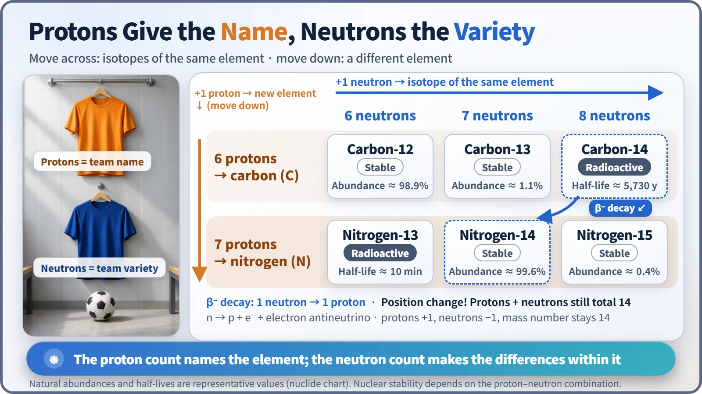

Nuclear & Radiation Basics · 004
One Names the Team, One Keeps the Ball Moving — Why Protons and Neutrons Matter in Nuclear Energy
The proton count gives an atom its name; the uncharged neutron walks past the 15 MeV electric hill and keeps the chain reaction going.
The number of protons decides which element an atom is; the number of neutrons changes its weight and stability within that element. Because the neutron carries no charge, it meets no electric barrier on its way into a nucleus, which is why it is the particle that triggers fission and keeps a reactor's chain reaction going. [1]
A team with only two positions
Picture a soccer team: goalkeeper, defenders, strikers, each position with its own job. The nucleus at the heart of an atom is a team too, but it has only two positions: protons and neutrons. One decides who the team is, its name. The other runs the field and passes the ball to the next player. Everything a nuclear power plant does starts with that second player, the neutron.
The headcount is the name: protons
A proton carries a positive charge. The number of protons in a nucleus is the atomic number, and that number is the element's name: one proton is hydrogen, six is carbon, seven is nitrogen, 92 is uranium. No exceptions.
An atom's chemical behavior is set by the electrons around the outside, and the number of electrons matches the number of protons. So add even one proton and the atom becomes a different element. Swap one player and the whole team gets a new name.
Same name, different weight: neutrons
A neutron weighs almost the same as a proton (about 0.14% more) but carries no charge. Atoms with different numbers of neutrons but the same number of protons are the same element. These same-name, different-weight siblings are isotopes. Carbon-12 (6 protons, 6 neutrons) and carbon-14 (6 protons, 8 neutrons) both form carbon dioxide in exactly the same way, and plants take up both without telling them apart. [2]
The neutron count does control stability. Carbon-12 stays carbon-12 forever, but carbon-14, with a few too many neutrons, decays by half roughly every 5,730 years: one neutron turns into a proton and the atom becomes nitrogen-14. The moment a neutron switches position to proton, the team name changes.
In nuclear energy this difference is decisive. Uranium-235 (143 neutrons) and uranium-238 (146 neutrons) are chemically the same uranium, but uranium-235 splits readily when hit by a slow neutron while uranium-238 hardly splits at all. Natural uranium contains only 0.72% uranium-235, so light-water reactor fuel is enriched to about 3 to 5%, using physical methods that exploit the tiny weight difference, since chemistry can't tell the two apart. [3]
One player stopped by the wall, one who walks right through
To split a nucleus, you have to send something into it. Send a proton and the positively charged nucleus pushes back, harder and harder as the proton gets closer. That creates an invisible hill in front of the nuclear surface, the Coulomb barrier, roughly 15 MeV high for a uranium nucleus. Getting a proton over it takes an accelerator. [4]
The neutron has no charge, so there is no repulsion and no hill. A slow neutron in a reactor has an energy of about 0.025 eV, roughly one six-hundred-millionth of the 15 MeV (15 million eV) hill a proton faces. Yet with no hill to climb, it reaches the nuclear surface even when ambling along that slowly. In fact, uranium-235 captures slow neutrons more readily: "faster gets in more easily" simply doesn't apply to neutrons.

One ball becomes two or three
When uranium-235 absorbs a neutron, it splits into two pieces, releasing energy along with about 2.4 new neutrons on average. Those neutrons split neighboring uranium-235 nuclei, which release more neutrons: a chain reaction. The new neutrons are very fast, so a moderator such as water slows them down to make them easier for the next nucleus to absorb. [5]
A reactor is not a machine for multiplying neutrons without limit. To keep power steady, exactly one on average of the two or three neutrons from each fission must go on to cause the next fission; the rest are absorbed or escape. Control rods and boron dissolved in the cooling water absorb neutrons to adjust that number. Protons can't play this role, because in front of the next nucleus they would run into the Coulomb barrier all over again.
Both positions on one page
Change the number of protons and you get a different element; change the number of neutrons and you get an isotope of the same element; a decay that turns a neutron into a proton changes the element's name.

| 6 neutrons | 7 neutrons | 8 neutrons | |
|---|---|---|---|
| 6 protons (carbon) | C-12, stable, about 98.9% | C-13, stable, about 1.1% | C-14, radioactive, half-life about 5,730 years |
| 7 protons (nitrogen) | N-13, radioactive, half-life about 10 min | N-14, stable, about 99.6% | N-15, stable, about 0.4% |
Key takeaways
The proton is the name-tag player that decides who an atom is. The neutron gives each element its variety and, in a reactor, is the playmaker that keeps the ball moving. That is why fuel enrichment, control rods and moderators are all designed around the neutron.